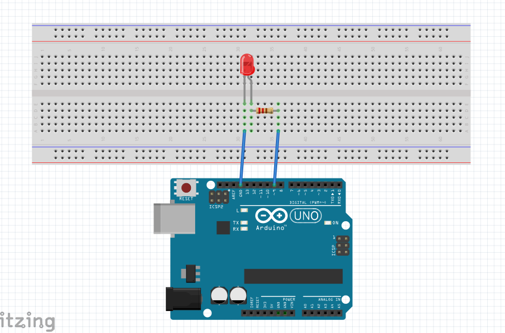

웹 브라우저의 슬라이더를 움직이면, USB로 연결된 Arduino의 LED가 그만큼 밝아지거나 어두워집니다.
p5.js로 만든 웹 화면에 슬라이더가 있습니다. 슬라이더 값(0~255)은 시리얼 통신으로 Arduino에 전달되고, Arduino는 그 값으로 PWM 신호를 만들어 LED의 밝기를 바꿉니다.
p5 화면에서 0~255 사이 값을 고릅니다.
값이 바뀌면 128\n처럼 숫자 한 줄을 보냅니다.
Arduino가 Serial.parseInt()로 숫자를 읽습니다.
analogWrite(9, 값)으로 LED 밝기가 바뀝니다.
Arduino의 디지털 핀은 5V(켜짐)와 0V(꺼짐)만 낼 수 있습니다. 그래서 LED를 아주 빠르게 켰다 껐다 하면서 켜져 있는 시간의 비율을 바꿉니다. 값이 0이면 항상 꺼짐, 128이면 절반 정도 켜짐, 255면 항상 켜짐이라 눈에는 밝기가 달라 보입니다. PWM은 ~ 표시가 있는 핀(3, 5, 6, 9, 10, 11)에서만 쓸 수 있어서 9번 핀을 사용했습니다.

📐 이 폴더에 circuit.png 를 업로드하면 회로도가 여기에 나타납니다| 부품 | 개수 | 역할 |
|---|---|---|
| Arduino Uno | 1 | p5에서 받은 값으로 PWM 출력 |
| LED (빨강) | 1 | 밝기가 바뀌는 출력 장치 |
| 저항 220Ω | 1 | LED에 너무 큰 전류가 흐르지 않게 보호 |
| 브레드보드, 점퍼선 | - | 부품 연결 |
D9 핀 → 220Ω 저항 → LED 긴 다리(+) → LED 짧은 다리(−) → GND
LED와 저항은 한 줄로 이어진 직렬 연결입니다. LED는 방향이 있어서, 긴 다리(애노드)가 저항 쪽, 짧은 다리(캐소드)가 GND 쪽으로 가야 불이 켜집니다.
p5.js 코드(보내는 쪽)와 Arduino 코드(받는 쪽) 두 개로 이루어져 있습니다. 두 코드 모두 통신 속도를 9600으로 맞췄습니다.
let slider;
let port;
let writer;
let lastValue = -1; // 마지막으로 보낸 값
function setup() {
createCanvas(400, 200);
// 슬라이더 (최소 0, 최대 255, 시작값 0)
slider = createSlider(0, 255, 0);
slider.position(100, 100);
// 연결 버튼
let button = createButton('아두이노 연결');
button.position(150, 150);
button.mousePressed(connect);
}
function draw() {
let value = slider.value();
background(value); // 밝기만큼 화면도 밝아짐
fill(255, 0, 0);
text('밝기: ' + value, 170, 80);
// 연결되어 있고, 값이 바뀌었을 때만 보내기
if (writer && value != lastValue) {
writer.write(new TextEncoder().encode(value + '\n'));
lastValue = value;
}
}
// 아두이노 연결
async function connect() {
port = await navigator.serial.requestPort();
await port.open({ baudRate: 9600 });
writer = port.writable.getWriter();
}| 부분 | 설명 |
|---|---|
createSlider(0, 255, 0) | 0~255 범위의 슬라이더를 만듭니다. Arduino analogWrite()가 받는 범위와 똑같이 맞췄습니다. |
createButton() | 누르면 connect()가 실행되는 연결 버튼입니다. |
slider.value() | 슬라이더의 현재 값을 읽습니다. |
background(value) | 슬라이더 값에 따라 화면도 어두워지거나 밝아져서 값을 눈으로 확인할 수 있습니다. |
value != lastValue | draw()는 1초에 약 60번 실행됩니다. 같은 값을 계속 보내지 않도록 값이 바뀌었을 때만 보냅니다. |
value + '\n' | 숫자 끝에 줄바꿈을 붙여 “숫자 하나가 끝났다”는 것을 Arduino에 알려 줍니다. |
TextEncoder | 글자를 시리얼로 보낼 수 있는 바이트 형태로 바꿉니다. |
requestPort() | 브라우저에 포트 선택 창을 띄웁니다. |
port.open() | 9600 속도로 포트를 엽니다. |
getWriter() | 데이터를 보내는 도구(writer)를 만듭니다. writer가 있으면 연결된 상태입니다. |
int ledPin = 9; // PWM 핀 (~ 표시된 핀)
void setup() {
Serial.begin(9600);
pinMode(ledPin, OUTPUT);
}
void loop() {
if (Serial.available() > 0) {
int brightness = Serial.parseInt(); // 숫자 읽기
if (Serial.read() == '\n') { // 한 줄이 끝났으면
analogWrite(ledPin, brightness); // LED 밝기 적용
}
}
}| 부분 | 설명 |
|---|---|
Serial.begin(9600) | p5와 같은 속도(9600)로 시리얼 통신을 시작합니다. |
pinMode(ledPin, OUTPUT) | 9번 핀을 출력용으로 설정합니다. |
Serial.available() | 받은 데이터가 있는지 확인합니다. |
Serial.parseInt() | 받은 글자 중에서 숫자를 읽어 정수로 바꿉니다. (예: "128" → 128) |
Serial.read() == '\n' | 숫자 바로 뒤가 줄바꿈인지 확인해, 완전한 값을 받았을 때만 적용합니다. |
analogWrite(ledPin, brightness) | 0~255 값으로 PWM 신호를 내보내 LED 밝기를 바꿉니다. |
전체 파일: sketch.js · led_brightness.ino
p5 화면에서 슬라이더를 움직이면 브레드보드의 LED 밝기가 함께 바뀌는 모습입니다.
Chrome 또는 Edge에서 Arduino를 USB로 연결한 뒤 실행하세요. Arduino IDE의 시리얼 모니터는 닫아야 연결됩니다.
처음에는 연결 버튼을 눌러도 포트가 열리지 않았습니다. Arduino IDE의 시리얼 모니터가 같은 포트를 쓰고 있었기 때문이었고, 시리얼 모니터를 닫으니 정상적으로 연결되었습니다. 한 포트는 한 프로그램만 쓸 수 있다는 것을 알게 되었습니다.
draw()는 1초에 약 60번 실행되기 때문에, 그 안에서 값을 그대로 보내면 같은 숫자가 계속 전송됩니다. lastValue 변수를 두고 값이 바뀌었을 때만 보내도록 고쳐서 통신을 안정적으로 만들었습니다.
디지털 핀은 켜짐과 꺼짐만 있지만, PWM으로 켜진 시간의 비율을 바꾸면 밝기를 단계적으로 조절할 수 있다는 점이 흥미로웠습니다. 또 PWM이 되는 핀(~)이 정해져 있어서 회로를 설계할 때 핀 선택이 중요하다는 것을 배웠습니다.
지금은 브라우저에서 Arduino로만 값을 보내지만, 반대로 Arduino의 가변저항 값을 p5로 받아 슬라이더를 움직이게 하거나, LED를 여러 개 연결해 색을 섞는 RGB 조명으로 확장해 볼 수 있을 것 같습니다.